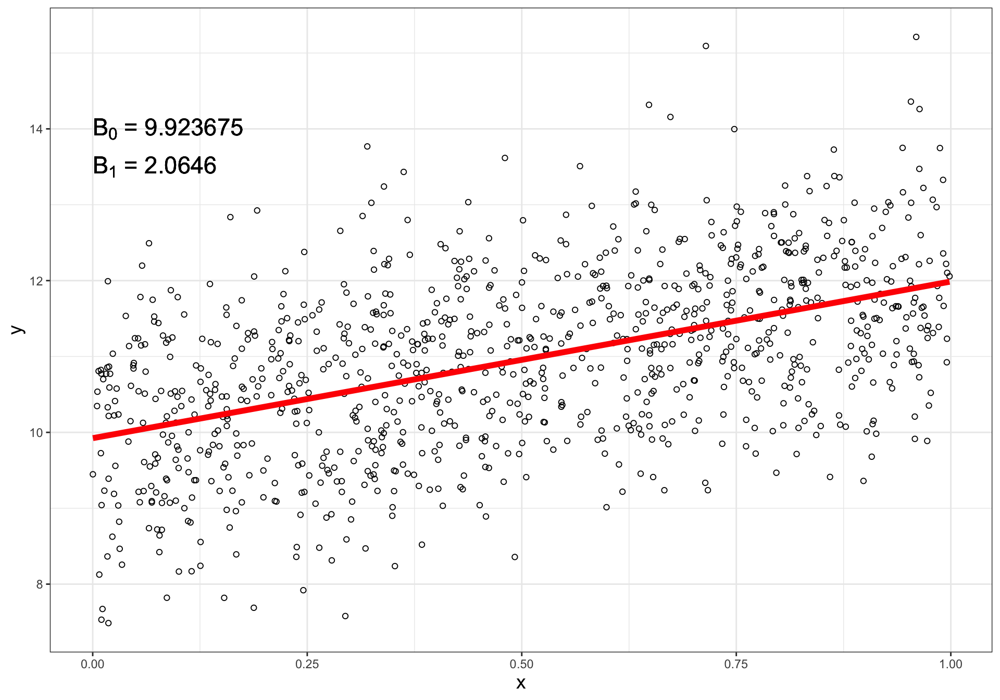

Linear Regression
with Survey Data
PUBHBIO 7225 Lecture 20
Generative AI acknowledgment: Google Gemini was used to assist in generating alt text for most images
Outline
Topics
- Linear regression with survey data (from a probability sample)
Activities
- 20.1 Linear Regression with NHANES
Readings
- See last slide for optional readings (PDFs on Carmen)
Assignments
- Problem Set 5 (last one!) due Thursday 11/13/2025 11:59pm via Carmen
(this will be graded by Dr Andridge, not peer reviewed) - Quiz 5 (last one!) due Thursday 11/20/2025 11:59pm via Carmen
Regression With Survey Data
Until now, we’ve estimated totals, means, and proportions, for a population or subpopulation
For these types of estimates, it is (hopefully by now) obvious why we need to use weights to account for the survey design
- For analyses that evaluate relationships among variables (e.g., regression) the issue is less straightforward
Broad generality: weighting “matters” more for estimating marginal quantities (means/proportions/totals) than it does for estimating relationships between/among variables (like via regression)
Thought experiment:
I want to learn about student loan balances among OSU students
I sample students via a design that oversamples students from out of state (who pay higher tuition)
If I ignore the design and estimate the following quantities, under what situations might they be biased?
Mean loan balance, population of all OSU students
Mean loan balance, population of OSU students from outside Ohio (out-of-state)
Difference in mean loan balance between in-state and out-of-state students
Does Weighting Matter for Regression?
Unweighted regression estimator is unbiased for true linear regression parameters if:
Mean model is correctly specified, (correctly specified \(X\)s), and
Sampling is ignorable – meaning that \(Z_i \perp\!\!\!\!\perp y | x\)
Weighted regression estimator protects us if one of these conditions is not met
If model is not correctly specified, weighted estimates give us an unbiased estimate of the mis-specified relationship (whereas unweighted estimates would be biased)
- Ex: True relationship quadratic, but you model as linear – weights give you the best estimate of that incorrectly specified relationship (best linear approximation to the quadratic relationship)
If sampling is non-ignorable, unweighted estimates will generally be biased, but weighted estimates will be unbiased
- Need the weights to properly account for sampling design since \(Z\) is related to \(y\)
Should we always use weighted regression?
- Penalty for doing weighted regression = loss of efficiency (larger variances) when model is correctly specified and sampling is ignorable
Example: 1988 NMIHS
Classic example: Gestational age (GA) and birthweight (BW) in the 1988 National Maternal and Infant Health Survey (NMIHS)
NMIHS = Probability sample of babies whose mothers were aged 15 and older in the U.S.
Oversampled African-American and low-birthweight babies
Sample size roughly 10,000 babies
Comparing weighted and unweighted analysis using BW (g) to predict GA (weeks):
| Parameter | Weighted Estimate (SE) | Unweighted Estimate (SE) |
|---|---|---|
| Intercept | 32.08 (.17) | 26.36 (.14) |
| Birthweight (g) | .00215 (.00005) | .00383 (.00005) |
Weighted: 100 gram reduction in BW associated with a 0.215 week (1.5 day) decrease in GA
Unweighted: 100 gram reduction in BW associated with a 0.383 week (2.7 day) decrease in GA
- Quite different results! Why?
Example (con’t)
- Difference is due to the non-linearity in the birthweight-gestational age association and the oversampling of low birthweight babies
Unweighted

Weighted
![A scatter plot also showing the relationship between weighted mean birthweight in grams (on the x-axis) and weighted mean gestational age in weeks (on the y-axis). The plot contains 19 data points, represented as circles of varying sizes. The size of each circle is proportional to its weight, with larger circles appearing at higher birthweights and gestational ages. A straight line is drawn through the data, showing a positive linear correlation. Compared to the unweighted plot, this graph's data points are less scattered and more tightly clustered around the trend line, especially at the higher end of the scale, suggesting that weighting has produced a better approximation of the linear trend.](./figures/NMIHS_weighted.png)
True relationship appears to be quadratic – but model misspecified as linear
Weighted model estimates give the best estimate of the linear approximation
Alternative: include a quadratic term in the model (thus weighted \(\approx\) unweighted)
Conditioning on Design Variables
One approach: include all design variables as predictors, along with any variables involved in creating the weights, and use unweighted regression
This by definition makes the sampling ignorable
- \(Z \perp\!\!\!\!\perp y|x\) if \(x\) determines \(Z\)!
This would potentially mean including in the model:
Stratum indicators
Cluster indicators (via random effects, perhaps)
Variables involved in nonresponse adjustments, poststratification/raking, etc.
A daunting task, especially for surveys with complex designs and post-survey weight adjustments
If it can be done, regression coefficient estimates and SEs will be unbiased
Conditioning on Design Variables (con’t)
Sometimes (often), however, true design variables are not provided to end users, or weights are otherwise manipulated
“Pseudo-strata” instead of the true strata
“Masked variance units (MVUs)” = “Pseudo-PSUs” instead of of the true PSUs
Additional manipulations to weights also common
- Weight trimming methods (truncating very large weights) can’t easily be incorporated
So this approach isn’t actually possible most of the time with publicly available data
Design Variable as the Outcome
Sometimes we might be interested in predictors of a variable that was used in the sampling design
Example: Birthweight (BW) and smoking in the 1988 NMIHS
Comparing weighted and unweighted analysis using maternal smoking status to predict BW (g) using ANCOVA:
Mother Smoked? Weighted Mean (SE) Unweighted Mean (SE) No 3409 (8.0) 2923 (12) Yes 3232 (12) 2664 (18) Difference 177 (15) 260 (21) Difference between weighted and unweighted is due to the oversampling of low birthweight babies
Can’t “adjust this away” with predictors – because the outcome (birthweight) is the design variable!
How Do I Know If Weighting Matters for MY Regression?
General consensus is you should use weights in the regression when:
The weight is a function of the dependent (outcome) variable
You don’t know enough about how the weights were constructed
(may be the case for some publicly available datasets)Large sample size – even if weights are not strictly necessary, the loss of power from using weights won’t be as much of a concern
Possible ways to check to see if weighted regression is necessary:
Perform both weighted and unweighted regressions, and compare coefficients estimates
- If not significantly different, weights not necessary
Add the weight and an interaction of the weight with each predictor to the model
- If coefficients of weights and interactions are not significant, weights not necessary
- Remember: If weights “don’t matter” for regression estimates, penalty for using weighted regression anyway is a loss of efficiency (variance too large) – might not be a big deal with a large sample size (like many surveys)
Details: What IS Weighted Regression?
From a finite population perspective, linear regression is a fitting of a line to a finite population of \(N\) units
- Describing the relationship between outcome \(y\) and predictor \(x\) in a finite set of units
Thinking specifically about a simple linear regression model, we have the best fitting least squares regression line: \[y = B_0 + B_1 x\]
- \(B_0\) and \(B_1\) are the coefficients that minimize the quantity: \[\sum_{i =1}^N (y_i - B_0 - B_1 x_i)^2\]
There is no assumption of normality and no assumption about (equal) variance
- A line describes the relationship between \(x\) and \(y\) in the finite population, and we take a sample from the population to use to estimate this line
Details (con’t)
- Closed-form expressions for \(B_0\) and \(B_1\) are:
\[\begin{aligned} \text{Slope: }B_1 &= \frac{\sum_{i=1}^N x_i y_i - \frac{1}{N} \left(\sum_{i=1}^N x_i \right) \left(\sum_{i=1}^N y_i\right)}{\sum_{i=1}^N x_i^2 - \frac{1}{N} \left(\sum_{i=1}^N x_i \right)^2} &= \frac{t_{xy} - \frac{t_x t_y}{N}}{t_{x^2} - \frac{(t_x)^2}{N}}\\ \text{Intercept: }B_0 &= \frac{1}{N} \sum_{i=1}^N y_i - B_1 \frac{1}{N} \sum_{i=1}^N x_i &= \frac{t_y-B_1 t_x}{N} \end{aligned}\]
- These are functions of totals – and we know how to estimate totals from any complex sampling design!
\[\begin{aligned} \hat{B}_1 &= \frac{\hat{t}_{xy} - \frac{\hat{t}_x \hat{t}_y}{\hat{N}}}{\hat{t}_{x^2} - \frac{(\hat{t}_x)^2}{\hat{N}}} = \frac{\sum_{i \in \mathcal{S}} w_i x_i y_i - \frac{\left(\sum_{i \in \mathcal{S}} w_i x_i \right) \left(\sum_{i \in \mathcal{S}} w_i y_i\right)}{\sum_{i \in \mathcal{S}} w_i} }{\sum_{i \in \mathcal{S}} w_i x_i^2 - \frac{\left(\sum_{i \in \mathcal{S}} w_i x_i \right)^2}{\sum_{i \in \mathcal{S}} w_i} } \\ \hat{B}_0 &= \frac{\hat{t}_y-\hat{B}_1 \hat{t}_x}{\hat{N}} = \frac{\sum_{i \in \mathcal{S}} w_i y_i - \hat{B}_1\sum_{i \in \mathcal{S}} w_i x_i}{\sum_{i \in \mathcal{S}} w_i} \end{aligned}\]
Details (con’t)
- Clearly in practice you wouldn’t hand-calculate these
- In fact, software uses better algorithms that aren’t subject to as much potential rounding error
- Also – we need standard errors!
Once again we can use linearization to estimate standard errors
\(\hat{B}_0, \hat{B}_1\) are non-linear functions of totals
Use linearization to approximate these quantities as linear functions of totals
Then, estimate the variance of this linear quantity – since we know how to estimate the variance for a total from any complex sample design
- Use SEs to compute CIs and perform hypothesis tests (e.g., Wald tests for regression coefficients)
Details (con’t)
Note: Subtle difference in CI interpretation from infinite population inference
- With a design-based CI, the confidence level (e.g., 95%) for a coefficient (say, \(B_1\)) is the sum of the probabilities of all possible samples \(\mathcal{S}\) that could be taken with the specified design for which the CI constructed from that sample will contain the true \(B_1\)
Note: Survey-Weighted Regression is not Weighted Least Squares (WLS)
- The point estimates you get from survey weighted linear regression will be the same as point estimates from WLS – but the standard errors will not be the same.
- We need the linearization estimator to properly account for the sample design
Degrees of Freedom
In the infinite population setting:
Estimating a mean: DF = \(n-1\)
Estimating a regression coefficient: DF = \(n-1-p\) (\(p\) = # coefficients excluding the intercept)
For finite population sampling:
Estimating a mean: DF = # PSUs \(-\) # Strata
Estimating a regression coefficient:
Option 1: DF = # PSUs \(-\) # Strata \(-\) \(p\)
Option 2: DF = # PSUs \(-\) # Strata (no extra subtraction of \(p\))
Option 1 is:
- Correct if all covariates are PSU-level
- Very conservative if covariates are SSU-level
Different software does different things by default…
Sometimes (for designs with small DF) these differences in DF can result in observably different p-values
Example: Sampling Schools
Data from Lecture 13
Two-stage cluster sample (no stratification)
Sampled 38 PSUs (districts)
Sampled 1-2 SSUs (schools) per PSU (district)
Total of 65 SSUs (schools) sampled
Regression of interest is predicting API (performance index) from percent English language learners and school type (E/M/H)
Option 1: DF = # PSUs \(-\) # Strata = \(38 - 1 = 37\)
Option 2: DF = # PSUs \(-\) # Strata \(-\) # predictors excluding intercept = \(38 - 1 - 3 = 34\)
Example (con’t)
DF = # PSUs \(-\) # Strata = 37
Call:
svyglm(formula = api00 ~ ell + stype, design = des)
Survey design:
svydesign(id = ~dnum + snum, weight = ~wt, fpc = ~N + Mi, data = samp)
Coefficients:
Estimate Std. Error t value Pr(>|t|)
(Intercept) 797.7698 27.6790 28.822 < 2e-16 ***
ell -4.5490 0.4874 -9.333 2.91e-11 ***
stypeM -92.7395 29.5132 -3.142 0.00329 **
stypeH -42.5118 26.6213 -1.597 0.11879
---
Signif. codes: 0 '***' 0.001 '**' 0.01 '*' 0.05 '.' 0.1 ' ' 1
(Dispersion parameter for gaussian family taken to be 4304.603)
Number of Fisher Scoring iterations: 2DF = # PSUs \(-\) # Strata \(-\) \(p\) = 34
Call:
svyglm(formula = api00 ~ ell + stype, design = des)
Survey design:
svydesign(id = ~dnum + snum, weight = ~wt, fpc = ~N + Mi, data = samp)
Coefficients:
Estimate Std. Error t value Pr(>|t|)
(Intercept) 797.7698 27.6790 28.822 < 2e-16 ***
ell -4.5490 0.4874 -9.333 6.63e-11 ***
stypeM -92.7395 29.5132 -3.142 0.00346 **
stypeH -42.5118 26.6213 -1.597 0.11954
---
Signif. codes: 0 '***' 0.001 '**' 0.01 '*' 0.05 '.' 0.1 ' ' 1
(Dispersion parameter for gaussian family taken to be 4304.603)
Number of Fisher Scoring iterations: 2The \(t\)-distributions with 34 and 37 are pretty similar, doesn’t make much difference which DF you use
But in a design with fewer PSUs, it might matter more
References for Futher Reading
Interested in more perspectives on whether or not to use weights in analyzing survey data?
Bollen KA, Biemer PP, Karr AF, Tueller S, and Berzofsky ME. (2016) Are survey weights needed? A review of diagnostic tests in regression analysis. Annual Review of Statistics and Its Application, 3:375-392.
Solon G, Haider SJ, and Wooldridge JM (2015). What are we weighting for? J. Human Resources, 50:301-316
Gelman A (2007). Struggles with survey weighting and regression modeling. Statistical Science, 22(2):153-164
Winship C and Radbill L (1994). Sampling weights and regression analysis. Sociological Methods and Research, 23:230-257
(PDFs on Carmen)
- Final thought: USE SURVEY-WEIGHTED REGRESSION
Activity 20.1
Linear Regression with NHANES
PUBHBIO 7225